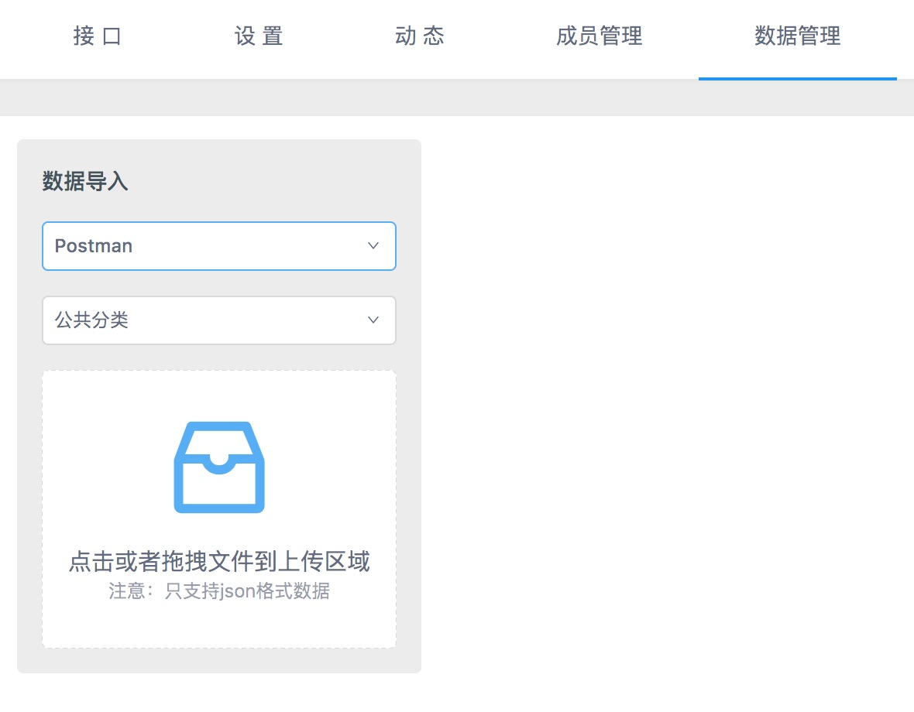
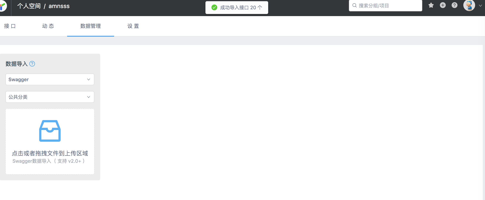

<!DOCTYPE html><html lang="zh-CN"><head><meta charSet="UTF-8"/><meta content="text/html; charset=utf-8" http-equiv="Content-Type"/><meta http-equiv="X-UA-Compatible" content="IE=edge"/><meta name="viewport" content="width=device-width, initial-scale=1, maximum-scale=1"/><meta name="apple-mobile-web-app-capable" content="yes"/><meta name="apple-mobile-web-app-status-bar-style" content="black"/><link rel="apple-touch-icon" sizes="180x180" href="../ydoc/images/apple-touch-icon.png"/><link rel="icon" type="image/png" sizes="32x32" href="../ydoc/images/favicon-32x32.png"/><link rel="icon" type="image/png" sizes="16x16" href="../ydoc/images/favicon-16x16.png"/><link rel="manifest" href="../ydoc/images/manifest.json"/><link rel="mask-icon" href="../ydoc/images/safari-pinned-tab.svg" color="#5bbad5"/><meta name="theme-color" content="#ffffff"/><meta http-equiv="Cache-Control" content="no-transform"/><meta http-equiv="Cache-Control" content="no-siteapp"/><title>数据导入-教程</title><link rel="stylesheet" href="../ydoc/styles/style.css"/><meta name="author" content="ymfe"/><meta name="keywords" content="api管理,接口管理,接口文档,api文档"/><meta name="description" content="YApi 是高效、易用、功能强大的 api 管理平台，旨在为开发、产品、测试人员提供更优雅的接口管理服务。可以帮助开发者轻松创建、发布、维护 API，YApi 还为用户提供了优秀的交互体验，开发人员只需利用平台提供的接口数据写入工具以及简单的点击操作就可以实现接口的管理"/><meta id="releativePath" content=".."/><link rel="stylesheet" href="../ydoc/ydoc-plugin-search/search.css"/><link rel="stylesheet" href="../ydoc/ydoc-plugin-search/search.css"/><link rel="stylesheet" href="../ydoc/ydoc-plugin-img-view/imgView.css"/><link rel="stylesheet" href="../web.css"/></head><body><div class="g-doc"><div class="m-aside"><div class="m-summary" id="js-menu"><div class="m-summary-content" id="js-menu-content"><div class="m-summary-block"><div class="m-summary-title">快速上手</div><ul class="m-summary-list indent"><li class="item"><a href="index.html" class="href">认识YApi</a></li><li class="item"><a href="quickstart.html" class="href">创建第一个API</a></li></ul></div><div class="m-summary-block"><div class="m-summary-title">进阶篇</div><ul class="m-summary-list indent"><li class="item"><a href="manage.html" class="href">权限</a></li><li class="item"><div class="m-summary-block"><a href="project.html" class="href">项目操作</a><ul class="m-summary-list indent"><li class="item"><a href="project.html#%e5%9f%ba%e6%9c%ac%e8%ae%be%e7%bd%ae" class="href">基本设置</a></li><li class="item"><a href="project.html#%e6%96%b0%e5%bb%ba%e9%a1%b9%e7%9b%ae" class="href">新建项目</a></li><li class="item"><a href="project.html#%e4%bf%ae%e6%94%b9%e9%a1%b9%e7%9b%ae" class="href">修改项目</a></li><li class="item"><a href="project.html#%e9%a1%b9%e7%9b%ae%e8%bf%81%e7%a7%bb" class="href">项目迁移</a></li><li class="item"><a href="project.html#%e9%a1%b9%e7%9b%ae%e6%8b%b7%e8%b4%9d" class="href">项目拷贝</a></li><li class="item"><a href="project.html#%e9%85%8d%e7%bd%ae%e7%8e%af%e5%a2%83" class="href">配置环境</a></li><li class="item"><a href="project.html#%e8%af%b7%e6%b1%82%e9%85%8d%e7%bd%ae" class="href">请求配置</a></li><li class="item"><a href="project.html#token%e9%85%8d%e7%bd%ae" class="href">token配置</a></li><li class="item"><a href="project.html#%e5%85%a8%e5%b1%80mock" class="href">全局mock</a></li></ul></div></li><li class="item"><div class="m-summary-block"><a href="api.html" class="href">接口操作</a><ul class="m-summary-list indent"><li class="item"><a href="api.html#%e6%8e%a5%e5%8f%a3%e9%85%8d%e7%bd%ae" class="href">接口设置</a></li><li class="item"><a href="api.html#%e6%8e%a5%e5%8f%a3%e8%bf%90%e8%a1%8c" class="href">接口运行</a></li></ul></div></li><li class="item"><div class="m-summary-block"><a href="mock.html" class="href">数据Mock</a><ul class="m-summary-list indent"><li class="item"><a href="mock.html#方式1.-mockjs" class="href">方式1. mockjs</a></li><li class="item"><a href="mock.html#方式2.-json-schema" class="href">方式2. json-schema</a></li><li class="item"><a href="mock.html#如何使用-mock" class="href">如何使用</a></li><li class="item"><a href="mock.html#mock%e8%af%b7%e6%b1%82%e4%b8%a5%e6%a0%bc%e6%a8%a1%e5%bc%8f" class="href">严格模式</a></li></ul></div></li><li class="item"><div class="m-summary-block"><a href="adv_mock.html" class="href">高级Mock</a><ul class="m-summary-list indent"><li class="item"><a href="adv_mock.html#mock-期望" class="href">Mock 期望</a></li><li class="item"><a href="adv_mock.html#自定义-mock-脚本" class="href">自定义脚本</a></li></ul></div></li><li class="item"><div class="m-summary-block"><a href="case.html" class="href">自动化测试</a><ul class="m-summary-list indent"><li class="item"><a href="case.html#%e7%ac%ac%e4%b8%80%e6%ad%a5%ef%bc%8c%e6%b5%8b%e8%af%95%e9%9b%86%e5%90%88" class="href">第一步，测试集合</a></li><li class="item"><a href="case.html#%e7%ac%ac%e4%ba%8c%e6%ad%a5%ef%bc%8c%e7%bc%96%e8%be%91%e6%b5%8b%e8%af%95%e7%94%a8%e4%be%8b" class="href">第二步，编辑测试用例</a></li><li class="item"><a href="case.html#%e7%ac%ac%e4%b8%89%e6%ad%a5%ef%bc%8c%e8%bf%90%e8%a1%8c%e8%87%aa%e5%8a%a8%e5%8c%96%e6%b5%8b%e8%af%95" class="href">第三步，运行自动化测试</a></li><li class="item"><a href="case.html#%e6%96%ad%e8%a8%80%e8%84%9a%e6%9c%ac%e5%85%ac%e5%85%b1%e5%8f%98%e9%87%8f" class="href">断言脚本公共变量</a></li><li class="item"><a href="case.html#%e6%9c%8d%e5%8a%a1%e7%ab%af%e8%87%aa%e5%8a%a8%e5%8c%96%e6%b5%8b%e8%af%95" class="href">服务端自动化测试</a></li></ul></div></li><li class="item"><div class="m-summary-block"><a href="" class="href">数据导入</a><ul class="m-summary-list indent"><li class="item"><a href="data.html#postman-数据导入" class="href">Postman 数据导入</a></li><li class="item"><a href="data.html#har-数据导入" class="href">HAR 数据导入</a></li><li class="item"><a href="data.html#swagger-数据导入" class="href">Swagger 数据导入</a></li><li class="item"><a href="data.html#yapi%e6%8e%a5%e5%8f%a3json%e6%95%b0%e6%8d%ae%e5%af%bc%e5%85%a5" class="href">JSON 数据导入</a></li><li class="item"><a href="data.html#%e9%80%9a%e8%bf%87%e5%91%bd%e4%bb%a4%e8%a1%8c%e5%af%bc%e5%85%a5%e6%8e%a5%e5%8f%a3%e6%95%b0%e6%8d%ae" class="href">通过命令行导入接口数据</a></li></ul></div></li><li class="item"><a href="export-data.html" class="href">数据导出</a></li></ul></div><div class="m-summary-block"><div class="m-summary-title">自定义</div><ul class="m-summary-list indent"><li class="item"><div class="m-summary-block"><a href="plugin-index.html" class="href">插件</a><ul class="m-summary-list indent"><li class="item"><a href="plugin-dev.html" class="href">插件开发</a></li><li class="item"><a href="plugin-list.html" class="href">插件列表</a></li><li class="item"><a href="plugin-hooks.html" class="href">钩子</a></li></ul></div></li><li class="item"><a href="redev.html" class="href">二次开发</a></li></ul></div><div class="m-summary-block"><ul class="m-summary-list"><li class="item"><a href="qa.html" class="href">常见问题解答</a></li><li class="item"><a href="CHANGELOG.html" class="href">版本记录</a></li></ul></div></div></div><div class="m-summary-switch" id="js-summary-switch"><svg viewBox="0 0 926.23699 573.74994" version="1.1" x="0px" y="0px" width="15" height="15" class="bottom"><g transform="translate(904.92214,-879.1482)"><path d="m -673.67664,1221.6502 -231.2455,-231.24803 55.6165,-55.627 c 30.5891,-30.59485 56.1806,-55.627 56.8701,-55.627 0.6894,0 79.8637,78.60862 175.9427,174.68583 l 174.6892,174.6858 174.6892,-174.6858 c 96.079,-96.07721 175.253196,-174.68583 175.942696,-174.68583 0.6895,0 26.281,25.03215 56.8701,55.627 l 55.6165,55.627 -231.245496,231.24803 c -127.185,127.1864-231.5279,231.248 -231.873,231.248 -0.3451,0 -104.688,-104.0616 -231.873,-231.248 z" fill="#fff"></path></g></svg><svg viewBox="0 0 926.23699 573.74994" version="1.1" x="0px" y="0px" width="15" height="15" class="top"><g id="Page-1" stroke="none" stroke-width="1" fill="none" fill-rule="evenodd"><g id="aaa" fill="#fff" fill-rule="nonzero"><path d="M231.2455,342.502 L0,111.25397 L55.6165,55.62697 C86.2056,25.03212 111.7971,-2.99999998e-05 112.4866,-2.99999998e-05 C113.176,-2.99999998e-05 192.3503,78.60859 288.4293,174.6858 L463.1185,349.3716 L637.8077,174.6858 C733.8867,78.60859 813.060896,-2.99999997e-05 813.750396,-2.99999997e-05 C814.439896,-2.99999997e-05 840.031396,25.03212 870.620496,55.62697 L926.236996,111.25397 L694.9915,342.502 C567.8065,469.6884 463.4636,573.75 463.1185,573.75 C462.7734,573.75 358.4305,469.6884 231.2455,342.502 Z" id="Shape" transform="translate(463.118498, 286.874985) scale(1, -1) translate(-463.118498, -286.874985) "></path></g></g></svg></div></div><div class="m-main" id="js-panel"><header class="m-header" id="js-header"><div class="m-header-title js-logo"><a href="../index.html" target="_self"><h6 class="name">YApi</h6></a></div><div><div class="m-search">
      <div class="icon">&#xf0fd;</div>
      <input type="text" class="input js-input" placeholder="搜索" />
      <div class="m-search-result js-search-result"></div>
    </div>
<div class="m-search">
      <div class="icon">&#xf0fd;</div>
      <input type="text" class="input js-input" placeholder="搜索" />
      <div class="m-search-result js-search-result"></div>
    </div></div><nav class="m-header-nav js-nav"><ul class="m-header-items"><li class="item active"><a class="href" href="index.html">教程</a></li><li class="item "><a class="href" href="../devops/index.html">内网部署</a></li><li class="item "><a class="href" href="../openapi.html">开放Api</a></li></ul></nav><div id="js-nav-btn" class="m-header-btn ui-font-ydoc"></div></header><div class="m-content" id="js-content"><div id="markdown-body" class="m-content-container markdown-body"><h1>数据导入</h1>
<p>在数据管理可快速导入其他格式的接口数据，方便快速添加接口。YApi 目前支持 postman, swagger, har 数据导入。</p>
<p>v1.3.23+ 增加数据导入的3种同步方式  normal, good, mergin</p>
<ol>
<li>普通模式(normal)：不导入已存在的接口；</li>
<li>智能合并(good)：已存在的接口，将合并返回数据的 response，适用于导入了 swagger 数据，保留对数据结构的改动；例如，用户对字段code 添加了mock信息, 当再次数据导入的时候 mock 字段将不会被覆盖</li>
<li>完全覆盖(mergin)：不保留旧数据，完全使用新数据，适用于接口定义完全交给后端定义， 默认为 normal</li>
</ol>
<h2 id="postman-数据导入">Postman 数据导入</h2>
<p>1.首先在 postman 导出接口</p>
<div></div>
<p>2.选择 collection_v1,点击 export 导出接口到文件 xxx</p>
<div></div>
<p>3.打开 yapi 平台，进入到项目页面，点击数据管理，选择相应的分组和 postman 导入  方式， 选择刚才保存的文件路径，开始导入数据</p>
<div></div>
<h2 id="har-数据导入">HAR 数据导入</h2>
<p>可用 chrome 实现录制接口数据的功能，方便开发者快速导入项目接口</p>
<p>1.打开 Chrome 浏览器开发者工具，点击 network，首次使用请先 clear 所有请求信息，确保录制功能开启（红色为开启状态）</p>
<div></div>
<p>2.操作页面实际功能，完成后点击 save as HAR with content,将数据保存到文件 xxx</p>
<div></div>
<p>3.打开 yapi 平台，进入到项目页面，点击数据管理，选择相应的分组和 har 导入  方式， 选择刚才保存的文件路径，开始导入数据</p>
<div></div>
<blockquote>
<p>Tips: har 数据导入只支持 response.content.mimeType 为 application/json 类型的数据</p>
</blockquote>
<h2 id="swagger-数据导入">Swagger 数据导入</h2>
<p>什么是 Swagger ？</p>
<div>[Swagger从入门到精通](https://www.gitbook.com/book/huangwenchao/swagger/details)</div>
<br>
1.生成 JSON 语言编写的 Swagger API 文档文件<div>  例如这样的数据 （<a href="http://petstore.swagger.io/v2/swagger.json" target="blank">http://petstore.swagger.io/v2/swagger.json</a>），可以将其内容复制到 JSON 文件中。</div>
<br>
<blockquote>
<p>Tips: v1.3.19 版本开始支持 swagger url 导入功能</p>
</blockquote>
<p>2.打开 yapi 平台，进入到项目页面，点击数据管理，选择相应的分组和 swagger 导入  方式， 选择刚才的文件，开始导入数据</p>
<div></div>
<div></div>
<div></div>
<h2 id="yapi-接口-json-数据导入">YApi 接口 JSON 数据导入</h2>
<p>该功能在 v1.3.12 版本上线，可导入在 yapi 平台导出的 json 接口数据。</p>
<p></p>
<h2 id="通过命令行导入接口数据">通过命令行导入接口数据</h2>
<p>YApi 支持通过命令行导入接口数据，他的应用场景是做自动化集成，比如配合 swagger ，接口文档前端不用维护，交由后端生成。</p>
<h3 id="通过命令行导入接口数据-使用方法">使用方法</h3>
<p>第一步，确保 <code>yapi-cli &gt;= 1.2.7</code> 版本，如果低于此版本请升级 <code>yapi-cli</code> 工具</p>
<pre><code>npm install -g yapi-cli
</code></pre>
<p>第二步，在任意一个目录下新建配置文件 <code>yapi-import.json</code>，内容如下：</p>
<pre><code class="language-json"><span class="token punctuation">{</span>
  <span class="token property">"type"</span><span class="token operator">:</span> <span class="token string">"swagger"</span><span class="token punctuation">,</span>
  <span class="token property">"token"</span><span class="token operator">:</span> <span class="token string">"17fba0027f300248b804"</span><span class="token punctuation">,</span>
  <span class="token property">"file"</span><span class="token operator">:</span> <span class="token string">"swagger.json"</span><span class="token punctuation">,</span>
  <span class="token property">"merge"</span><span class="token operator">:</span> <span class="token string">"normal"</span><span class="token punctuation">,</span>
  <span class="token property">"server"</span><span class="token operator">:</span> <span class="token string">"http://yapi.local.qunar.com:3000"</span>
<span class="token punctuation">}</span>
</code></pre>
<p><code>type</code> 是数据数据方式，目前官方只支持 swagger</p>
<p><code>token</code> 是项目 token，在 <code>项目设置 -&gt; token</code> 设置获取</p>
<p><code>file</code> 是 swagger 接口文档文件，可使用绝对路径或 url</p>
<p><code>merge</code> 有三种导入方式(v1.3.23+支持) normal, good, mergin</p>
<ol>
<li>普通模式(normal)：不导入已存在的接口；</li>
<li>智能合并(good)：已存在的接口，将合并返回数据的 response，适用于导入了 swagger 数据，保留对数据结构的改动；</li>
<li>完全覆盖(mergin)：不保留旧数据，完全使用新数据，适用于接口定义完全交给后端定义， 默认为 normal</li>
</ol>
<p><code>server</code> 是 yapi 服务器地址</p>
<p>第三步，在<code>新建配置文件的当前目录</code>，执行下面指令</p>
<pre><code>yapi import
</code></pre>
</div><div class="m-content-container m-paging"><div class="m-paging-prev m-paging-item"><a href="case.html" class="href"><span class="ui-font-ydoc"></span>自动化测试</a></div><div class="m-paging-next m-paging-item"><a href="export-data.html" class="href">数据导出<span class="ui-font-ydoc"></span></a></div></div></div></div></div><div><div class="m-mask js-mask">
    <div class="container">
      
    </div>
    </div></div><script>
    var $content = document.getElementById('js-content');
    var $summaryItems = Array.prototype.slice.call(document.querySelectorAll('#js-menu .href'));
    var $menu = document.getElementById('js-menu');
    if ($menu && sessionStorage.menuScrollTop) {
		$menu.scrollTop = sessionStorage.menuScrollTop;
    }
    // 刷新页面但不切换 pathname 的时候，内容区恢复到记忆的高度
    if ($content && sessionStorage.contentScrollTop && window.location.pathname == sessionStorage.locationPathname) {
      $content.scrollTop = sessionStorage.contentScrollTop;
    }
    sessionStorage.setItem('locationPathname', window.location.pathname);</script><script src="../ydoc/scripts/plugins/dollar.min.js"></script><script src="../ydoc/scripts/plugins/responsive-nav.min.js"></script><script src="../ydoc/scripts/plugins/slideout.min.js"></script><script src="../ydoc/scripts/app.js"></script><script src="../ydoc/ydoc-plugin-search/core.js"></script><script src="../ydoc/ydoc-plugin-search/search.js"></script><script src="../ydoc/ydoc-plugin-search/core.js"></script><script src="../ydoc/ydoc-plugin-search/search.js"></script><script src="../ydoc/ydoc-plugin-img-view/imgView.js"></script><script src="../search_json.js"></script><script src="../search_json.js"></script></body></html>